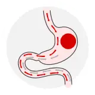
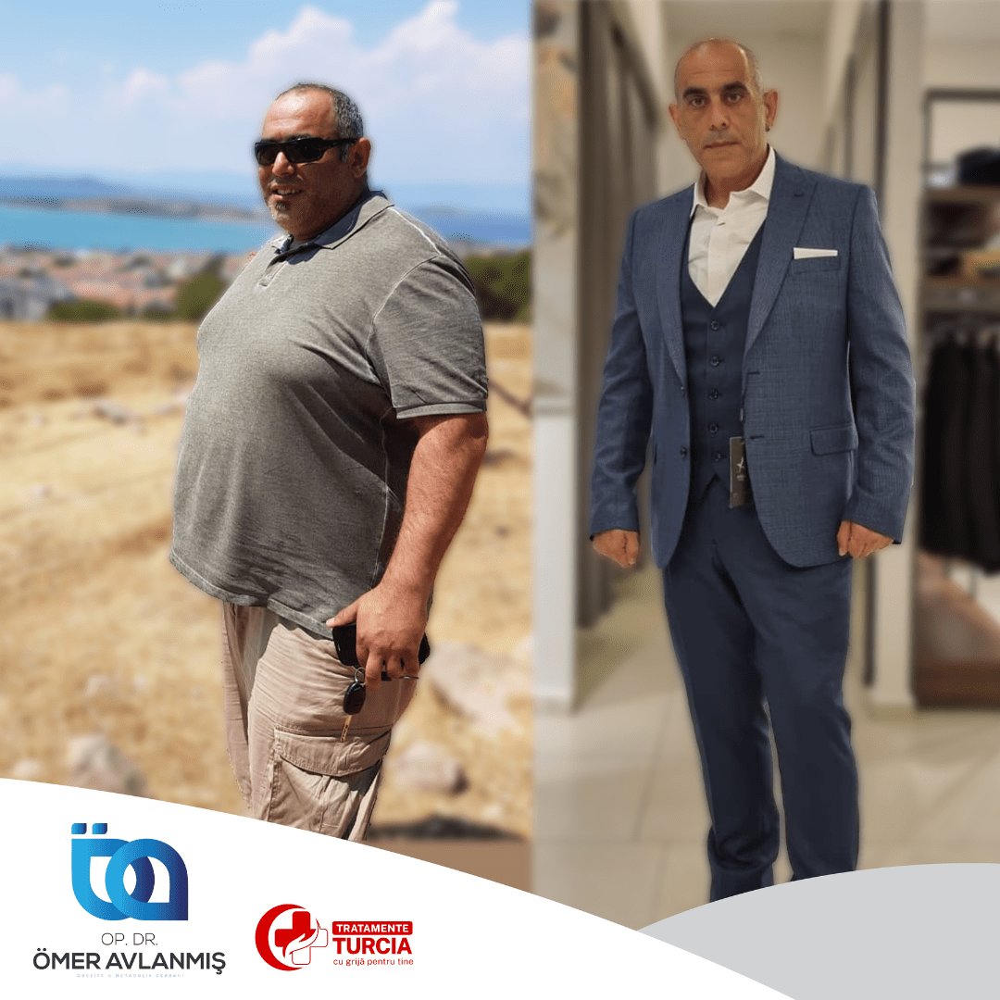
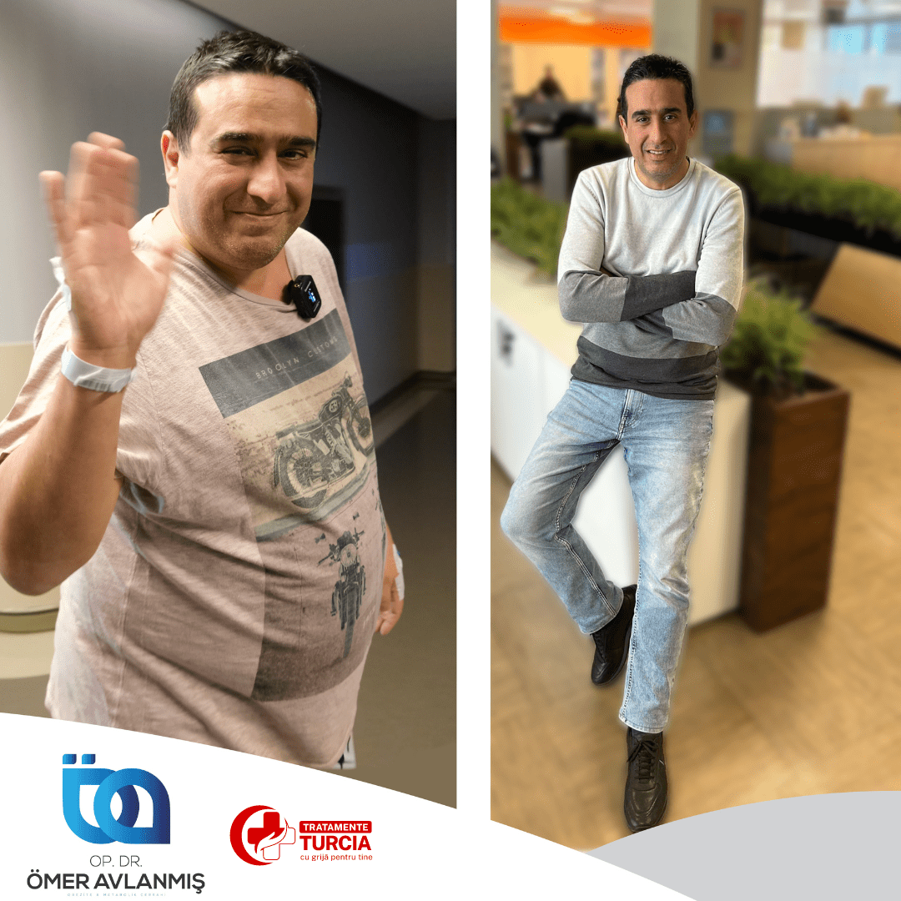

Ce este balonul gastric?
Balonul gastric este un dispozitiv medical temporar și reprezintă o alternativă a dietelor convenționale care eșuează din cauza senzației constante de foame.
Această procedură nechirurgicală este realizată cu ajutorul endoscopului și este reversibilă. Tratamentul se bazează pe efectul de ocupare a spațiului intragastric, care ajută la sporirea senzației de sațietate. Procedura de montare a balonului este una simplă și larg răspândită, aplicabilă la diferite grade de obezitate.
Volumul unui stomac normal este de aproximativ 1,5 l, iar balonul ocupă o mare parte din acesta și induce pierderea în greutate prin: creșterea senzației de sațietate, întârzierea golirii gastrice și reducerea semnificativă a cantităților de alimente consumate la fiecare masă.

Tipuri de balon gastric
Balonul gastric pe 6 luni
Temporar, destinat să rămână în stomac timp de șase luni. Este o soluție non-chirurgicală ideală pentru pacienții care doresc o opțiune pe termen scurt. Balonul este umplut cu ser fiziologic și se introduce endoscopic; după șase luni este necesară extracția printr-o procedură similară.
Balonul gastric pe 12 luni
Similar cu varianta de șase luni, dar conceput să rămână în stomac un an întreg — pacientul are mai mult timp să se adapteze la noile obiceiuri alimentare și să realizeze o pierdere în greutate mai consistentă.
Balonul Allurion
O inovație în domeniu: nu necesită nici introducere endoscopică, nici extracție. Balonul se înghite sub formă de capsulă, apoi se umple cu lichid odată ce ajunge în stomac. După aproximativ patru luni, balonul se descompune și este eliminat natural prin sistemul digestiv.
Cui i se recomandă balonul gastric?
Recomandarea pentru plasarea balonului gastric este adresată pacienților supraponderali și obezi, cu un indice de masă corporală (IMC) ≥ 27 kg/m², persoanelor care refuză intervenția chirurgicală sau care au o contraindicație fermă pentru chirurgia bariatrică:
- Persoane cu vârsta cuprinsă între 18 și 65 de ani
- Care nu au fost supuse unei intervenții bariatrice de micșorare a stomacului și/sau altor intervenții chirurgicale la nivelul tractului digestiv
- Care nu prezintă alergii cunoscute sau suspectate la poliuretan sau silicon
Beneficiile montării balonului gastric
- Nu necesită spitalizare îndelungată, anestezie și alte servicii ATI suplimentare
- Procedură minim invazivă, non-chirurgicală, reversibilă și mult mai ieftină în comparație cu procedurile chirurgicale
- Recuperarea este rapidă
- Presupune doar o sedare ușoară, nu anestezie cu intubație
- Reprezintă o soluție foarte bună pentru inducerea pierderii în greutate la persoanele cu obezitate avansată, în perspectiva pregătirii pentru o intervenție chirurgicală

Intervenția propriu-zisă
Intervenția este realizată cu ajutorul endoscopului, o tehnică minim invazivă. Se inserează în stomac un balon din silicon, umplut cu soluție salină sterilă. Prin inducerea unei senzații de plenitudine gastrică se reduce aportul de alimente.
Dispozitivul este plasat în 15-30 de minute. Pacienții care respectă un plan alimentar adecvat pot slăbi, în decurs de 6 luni, între 15 și 20% din masa corporală inițială.
În marea majoritate a cazurilor, după 48 de ore regăsești un confort natural și poți relua toate activitățile obișnuite. Primele 6-7 zile reprezintă o perioadă de adaptare, în care pot apărea ușoare stări de greață.
Rezultate de succes
Pacienții care respectă dieta au rezultate spectaculoase după montarea balonului gastric. Pierderea ponderală, în condițiile respectării tuturor indicațiilor medicale și a regimului indicat, se situează între 10 și 25 kg, cu o medie de 17,2 kg.
După 6 sau 12 luni, balonul se extrage endoscopic, sub analgosedare. Recomandarea noastră este ca după implantarea balonului să mergi la un medic nutriționist, care te poate ajuta cu o dietă personalizată.






De ce să alegi Tratamente Turcia by Medicross
- Abordare personalizată, adaptată la nevoi diferite și unice pentru fiecare pacient.
- Suntem asociați cu spitale din Turcia, Istanbul, cu experiență îndelungată.
- Intervențiile medicale sunt realizate în centre dedicate.
- Împreună cu partenerii noștri am creat un întreg program dedicat pacienților.
- Asigurăm translator, fiind conștienți că pacienții noștri au nevoie de comunicare permanentă.
- Echipa medicală va fi în contact cu tine oricând ai nevoie, atât înainte, cât și după operație, pe termen lung.